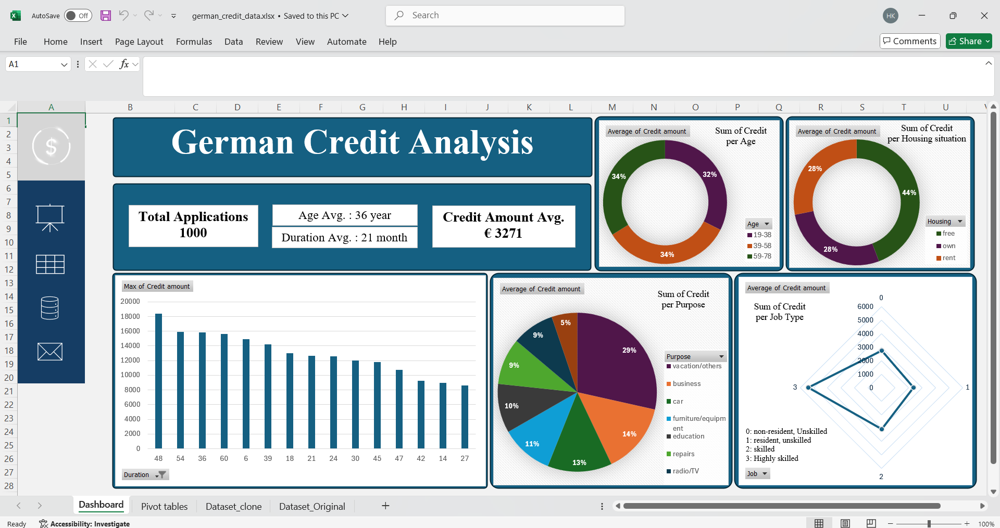

German Credit Data Dashboard 📊
📌 Overview
This project is an interactive Excel dashboard built using German Credit Data, designed to analyze and visualize patterns in credit allocation. It helps explore relationships between age, job type, savings, housing situation, and loan amounts.
📂 Dataset Information
The dataset contains 1,000 records with the following key attributes: * Age & Sex – Demographic information of loan applicants. * Job – Categorical job classification. * Housing – Applicant’s housing status (Own, Rent, Free). * Saving & Checking Accounts – Financial background of applicants. * Credit Amount & Duration – Loan amount and repayment duration. * Purpose – Reason for taking a loan (e.g., car, education, business).📊 Analysis & Insights
The dashboard provides insights into:✔ Credit Distribution – Loan amounts by age, job, and housing type.
✔ Loan Purpose Trends – Common reasons for loans and their average amounts.
✔ Account & Credit Patterns – Impact of savings/checking accounts on loan approval.
✔ Credit Amount vs. Duration – Relationship between loan size and repayment time.
🎛 Dashboard Features
🚀 Interactive Slicers & Filters – Users can filter by Job, Age, Purpose, and Housing.📌 Pivot Tables & Charts – Includes bar charts, pie charts, and trend lines for visual representation.
📊 KPI Cards – Displays key metrics such as total credit applications, average loan amounts, and most common loan purposes.